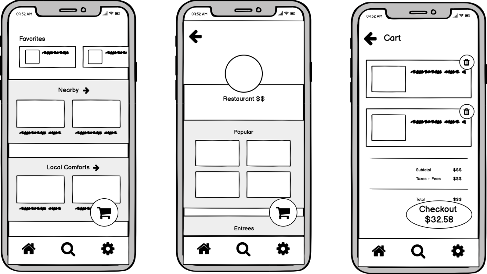
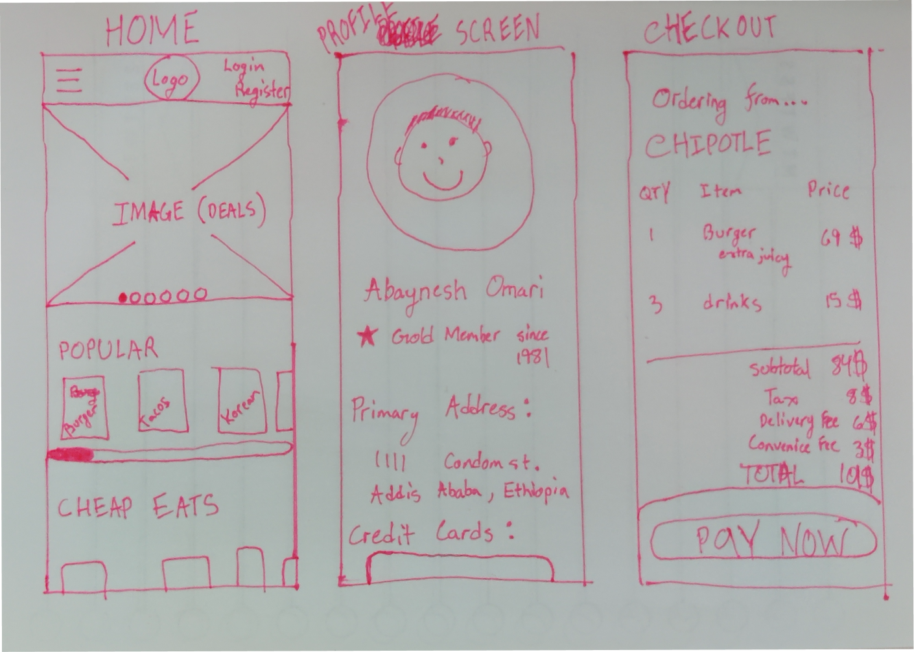
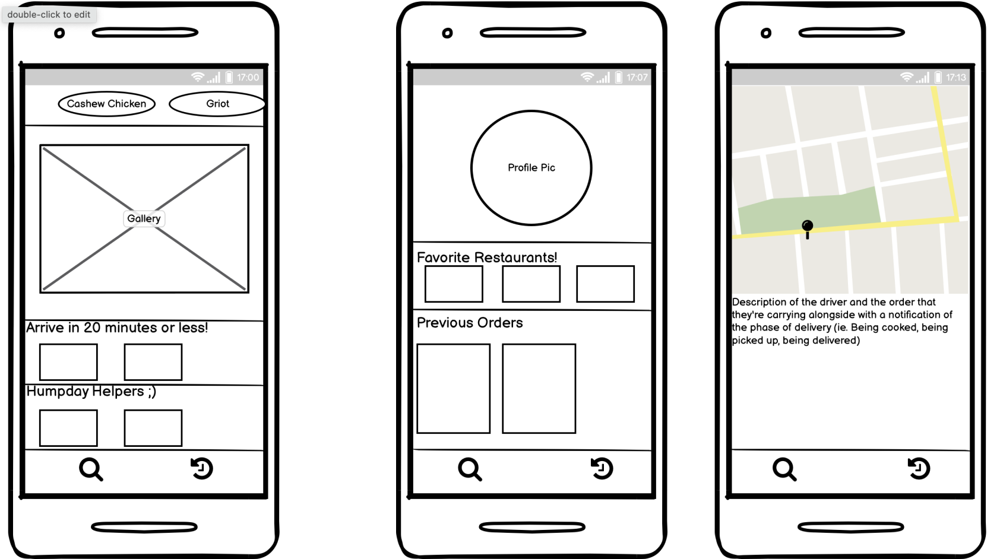
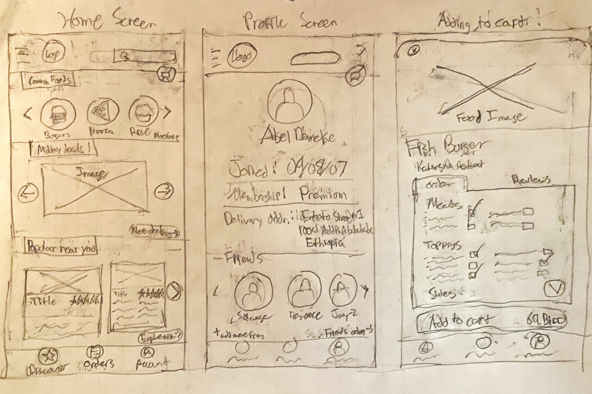
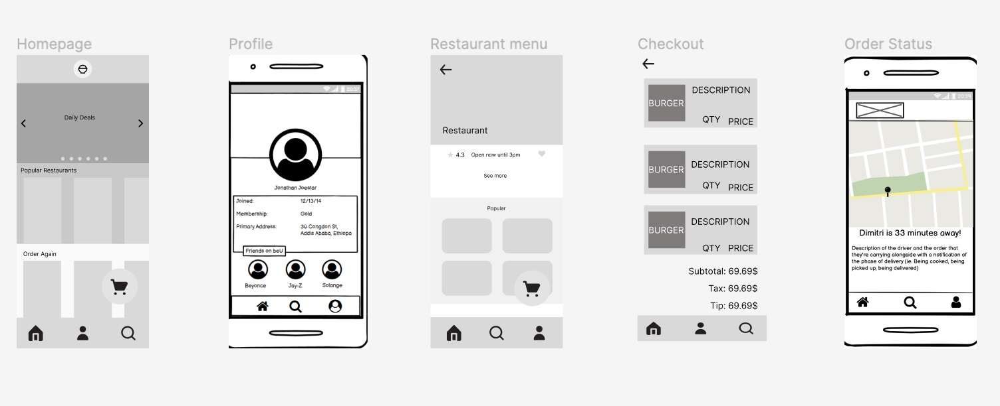

The goal of this prototype was to design an interactive interface for an emerging startup
while going through the full process of mocking up a solution to the startup's concept. My partners
and I resonated with BeU's mission. BeU delivery is an on-demand food delivery service in
Africa similar to DoorDash or UberEats. They are the #1 food delivery service in Ethiopia,
67% cheaper than the competition, with plans to expand their services to new markets and
eventually become the super APP of Africa. Our group is designing a mobile interface for
BeU because we felt that most users would be interacting with the application on their
phones similar to DoorDash and UberEats. Currently a majority of the Ethiopian population
lacks internet, with only 20.6% surveyed to have consistent internet access in 2021. Furthermore
mobile devices occupy the primary market share in Ethiopia with the breakdown being 63.24% Mobile,
34.29% Desktop, and 2.3% Tablet. This is why a mobile prototype seemed the most viable option for our group.
Timeline
2 weeks
Discipline
Idea Generation
Rapid prototyping - Lo-fi
Rapid prototyping - Hi-fi
Iteration and Feedback Sessions
Usability Testing and Evaluation
Development and launch
Team
Robert Bush
Ikenna Ihenatu
Erick Lerena
Harisen Luby
Sketching
After reading the description of the BeU mission, we came up with a few sketches that we thought
achieved the startup's goal. Each person in our group came up with 3 frames each.




Wireframe
After some deliberation, we picked the best aspects of all of our designs and came up with a
few wireframes to get a rough idea of our final design.

Hi-fi Wireframes
First Iteration Feedback
"In the cart it would be nice to change the quantity of items numerically."
"It would be helpful to have a dropdown button to read more on the restaurant page to
read the rest of the description"
"I'd put the user profile picture in the nav bar in the bottom right corner instead of the
generic icon"
"There are a lot of inconsistent fonts and weights used"
After receiving critiques from our classmates, we began iterating and improving our prototype.
Above are some examples of critiques we received that were then fixed in our current version.
They allowed us to provide a more user friendly prototype that better encapsulated what we
hoped to accomplish.
User Testing Analysis and Critique
Imagine you are an office worker looking to get a quick lunch delivered to your home.
Place a delivery order from Moyo's Cafe.
Take as much time as you need to explore this website. Move on to the next task when
you're ready.
Think aloud as you navigate the prototype!
Browse the available restaurants that are open for delivery.
Find out how many items are currently in your cart.
Feedback
Overall...
User #3 was also appreciative of the deals being front and center on the homescreen.
For the first subtask, some mentioned how easy it was to navigate the app and commented
on how useful certain features were (time to deliver and rows for "Popular Restaurants",
"Favorite Restaurants", "Order Again", etc.)
Most users noticed how not everything was interactable which confused them as they tried
to get to a specific restaurant page.
Many of the user testers noticed a few issues we overlooked such as missing a picture
for one of our restaurants, and missing some text on another one.
They also noted how useful it would be to have a menu bar at the top of the restaurant
page to quickly navigate to the entrees section or drinks section.
The user testers universally enjoyed the friends feature, and were excited at the future
possibilities for it.
Many were saddened at the lack of ability to use a drop down to read more about a
restaurants information.
They pointed out a general appreciation for all the information on a restaurants page
such as: rating, hours, and menu.